<?xml version="1.0" encoding="UTF-8"?><rss version="2.0"
	xmlns:content="http://purl.org/rss/1.0/modules/content/"
	xmlns:wfw="http://wellformedweb.org/CommentAPI/"
	xmlns:dc="http://purl.org/dc/elements/1.1/"
	xmlns:atom="http://www.w3.org/2005/Atom"
	xmlns:sy="http://purl.org/rss/1.0/modules/syndication/"
	xmlns:slash="http://purl.org/rss/1.0/modules/slash/"
	
	xmlns:georss="http://www.georss.org/georss"
	xmlns:geo="http://www.w3.org/2003/01/geo/wgs84_pos#"
	>

<channel>
	<title>ACTS</title>
	<atom:link href="https://actskids.org/feed/" rel="self" type="application/rss+xml" />
	<link>https://actskids.org</link>
	<description></description>
	<lastBuildDate>Tue, 09 Dec 2025 20:39:34 +0000</lastBuildDate>
	<language>en-US</language>
	<sy:updatePeriod>
	hourly	</sy:updatePeriod>
	<sy:updateFrequency>
	1	</sy:updateFrequency>
	<generator>https://wordpress.org/?v=7.0</generator>
<site xmlns="com-wordpress:feed-additions:1">120928507</site>	<item>
		<title>Blessings Dear Friends of ACTS</title>
		<link>https://actskids.org/2025/11/04/blessings-dear-friends-of-acts/</link>
					<comments>https://actskids.org/2025/11/04/blessings-dear-friends-of-acts/#respond</comments>
		
		<dc:creator><![CDATA[Karen Cornell]]></dc:creator>
		<pubDate>Wed, 05 Nov 2025 00:32:20 +0000</pubDate>
				<category><![CDATA[Uncategorized]]></category>
		<guid isPermaLink="false">https://actskids.org/?p=352</guid>

					<description><![CDATA[The new school year has begun and 244 students are enrolled. This month we will be measuring the children for their new uniforms. Since the creation of the new Central Regional State under which ACTS operates, there have been several visits by the concerned government officials. They include the three signatories of our project agreement [&#8230;]]]></description>
										<content:encoded><![CDATA[
<p class="wp-block-paragraph">The new school year has begun and 244 students are enrolled. This month we will be measuring the children for their new uniforms.</p>


<p class="wp-block-paragraph">Since the creation of the new Central Regional State under which ACTS operates, there have been several visits by the concerned government officials. They include the three signatories of our project agreement with the government (Women &amp; Children Affairs Bureau, Education Bureau, and Finance and Economic Development). The school gets occasional and surprise monitory visits from representatives of each of these bureaus to see if ACTS is operating according to the agreement including proper use of resources. ACTS was rated among the top ten in the whole region for following the criteria and awarded a certificate of acknowledgement. We are so happy with the dedicated and diligent efforts of all involved.</p>


<p class="wp-block-paragraph">The children are again receiving the meal a day that was not available to them over the summer when school was on recess. This will provide immediate benefits to those suffering from malnutrition from not having adequate food for weeks on end.</p>


<p class="wp-block-paragraph">The teachers report that the kids are truly enjoying the playground equipment which was installed last year. These, along with singing, are favorite activities (remember that the songs are not secular, but praise songs).</p>


<p class="wp-block-paragraph">The solar project has also been beneficial in many ways. To take full advantage of the abundant sunshine, however, we have found that additional storage capacity is needed. The amount of cooking that can be undertaken is limited because of the need to acquire more batteries. Our in-country team is exploring the best options.</p>


<p class="wp-block-paragraph">Things in the surrounding area and even in the larger cities, remain unstable and dangerous. Many who fought in the civil war have formed gangs. A primary activity of these gangs is kidnapping. It is difficult to imagine the corruption that is involved, but these gangs often bribe bank employees to identify which customers have balances in their bank accounts. Those who do become targets for the criminals. What follows is either a ransom gets paid or a murder takes place.</p>


<p class="wp-block-paragraph">This is all scary stuff, but praise the Lord, the school remains a safe place and the food supply and other assets remain untouched.</p>


<p class="wp-block-paragraph">Included in this update is a letter (below) we received in response to our inquiring about Woudy and his family. You may remember that he is our ACTS director in Ethiopia. He has worked for ACTS for well over ten years, more as a partner than as an employee. As you will tell from his letter, which he gave us permission to share, he is truly a man after God’s own heart. His work alongside us has been a blessing. He believes in ACTS ministry and won’t take much financially from us. But he knows that the ACTS family has prayed for him and for his work and his safety. We hope that you are encouraged by his letter knowing that you have supported him and the wonderful work that he does.</p>


<p class="wp-block-paragraph">&#8220;Thank you so much for your concern and for asking about my personal ministry activities. I truly feel blessed for the opportunities God has given me to serve Him in various ways.</p>


<p class="wp-block-paragraph">The ACTS ministry has always felt like a way for me to &#8216;give back&#8217; in gratitude for the immense grace God showed me during my childhood. Growing up in a rural village with no access to education — the key that unlocks so many doors in life — shaped me deeply. Every time I see the children in Woja, I see my own story reflected in them, as if looking back five decades. It’s not only a ministry opportunity for me but also a continual reminder to give thanks to God for His provision and protection.</p>


<p class="wp-block-paragraph">Many have encouraged me to share my story, and recently I began doing so on Evangelical TV. My journey is a testimony to God’s grace — a story that goes from rural to urban, from darkness to light, from poverty to abundance, from a small village to the global stage. Even now, as I travel and fly between continents, I look out of the airplane windows, see the footprints of the Creator, and find myself singing Isaiah 40:28. This is more than an understanding of God’s greatness; it’s an experience that I feel deeply within me — a privilege and a calling to serve Him and His people.</p>


<p class="wp-block-paragraph">Like Moses, I have never considered myself naturally gifted or extroverted enough for the work before me. Yet I have seen lives blessed, strengthened, and even released from the bondage of evil through the ministries God has entrusted to me. This has always been a sign to me that God chooses to work beyond my weaknesses to accomplish His purposes. The opportunities for education, teaching, and ministry in theological schools and churches — along with the positive feedback from students and congregations — have been continual encouragements to keep serving by His grace.</p>


<p class="wp-block-paragraph">God has also blessed me with a wonderful wife and family, and I recognize my responsibility not only to serve the church but also to care for them. My calling now seems to be expanding to include the diaspora as well. Through ministry in France and an online presence reaching various countries, I am seeing how God may be opening doors for both local and global service.</p>


<p class="wp-block-paragraph">The seven years we have spent in France have been a season of both ministry and learning. It has taught me how to balance family and church, local and abroad. It has also been a time of study and writing. This past summer, for example, I taught a course on Galatians to both BA and MA students in Addis Ababa, Ethiopia&#8217;s capital and spoke at a three-day teaching conference in Dire Dawa, Ethiopia — my very first place of employment 30 years ago, where I served as an elder and Bible study leader while working as an accountant for a government organization. I also published an Amharic book on Galatians entitled The Israel of God (Gal. 6:16). The lack of standard textbooks in Amharic, along with the experience of teaching for the first time using my own book as a textbook, has given me added inspiration to write more. Many have been urging me to write more books, and I also sense that this is another gift God has given me to bless the Ethiopian church.&#8221;</p>


<p class="wp-block-paragraph">Thank you for your continued support and prayers. ACTS influence reaches far beyond the school yard to make Jesus name known to the ends of the earth.</p>
]]></content:encoded>
					
					<wfw:commentRss>https://actskids.org/2025/11/04/blessings-dear-friends-of-acts/feed/</wfw:commentRss>
			<slash:comments>0</slash:comments>
		
		
		<post-id xmlns="com-wordpress:feed-additions:1">352</post-id>	</item>
		<item>
		<title>“I saw that wisdom is better than folly, just as light is better than darkness” Ecclesiastes 2:13</title>
		<link>https://actskids.org/2024/08/01/i-saw-that-wisdom-is-better-than-folly-just-as-light-is-better-than-darkness-ecclesiastes-213/</link>
					<comments>https://actskids.org/2024/08/01/i-saw-that-wisdom-is-better-than-folly-just-as-light-is-better-than-darkness-ecclesiastes-213/#respond</comments>
		
		<dc:creator><![CDATA[Karen Cornell]]></dc:creator>
		<pubDate>Thu, 01 Aug 2024 20:44:00 +0000</pubDate>
				<category><![CDATA[Uncategorized]]></category>
		<guid isPermaLink="false">https://actskids.org/?p=359</guid>

					<description><![CDATA[For years it has been ACTS’ mission to bring light into the lives of those who do not know Jesus and to increase the wisdom of our Christian teachers and staff and other community believers. This has brought a significant number of non-believers into spiritual light and, through various projects, has helped the whole Woja [&#8230;]]]></description>
										<content:encoded><![CDATA[
<p class="wp-block-paragraph">For years it has been ACTS’ mission to bring light into the lives of those who do not know Jesus and to increase the wisdom of our Christian teachers and staff and other community believers. This has brought a significant number of non-believers into spiritual light and, through various projects, has helped the whole Woja village.</p>


<p class="wp-block-paragraph">Now just for fun, let’s do a little exercise. Go over to your light switch and turn it off and then back on. For the first time ever, the same thing can be done in the Woja school rooms. The long-awaited solar project has been completed and the school rooms and surrounding area have a different kind of light!</p>


<p class="wp-block-paragraph">What does this mean? Well for one, ACTS can now begin Bible classes and studies for adults in the evenings. Films like the Jesus Project, which has been translated into the Amharic language, can be shared with the community. The whole facility will be safer as the guards will be able to more closely monitor activity in and around the yard. And the school rooms will be more conducive for learning.</p>


<div class="wp-block-group"><div class="wp-block-group__inner-container is-layout-constrained wp-block-group-is-layout-constrained">
<div class="wp-block-group"><div class="wp-block-group__inner-container is-layout-constrained wp-block-group-is-layout-constrained">
<div class="wp-block-group"><div class="wp-block-group__inner-container is-layout-constrained wp-block-group-is-layout-constrained">
<figure class="wp-block-gallery has-nested-images columns-default is-cropped wp-block-gallery-1 is-layout-flex wp-block-gallery-is-layout-flex">
<figure class="wp-block-image size-large">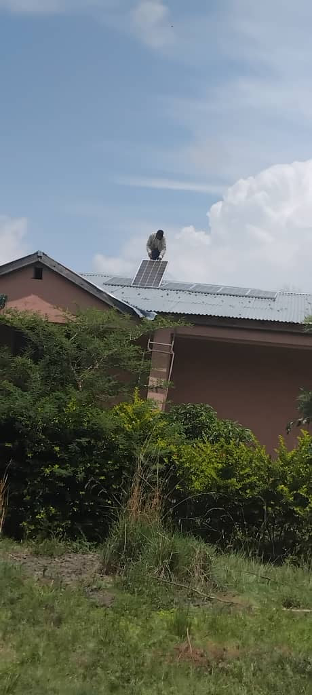</figure>


<figure class="wp-block-image size-large">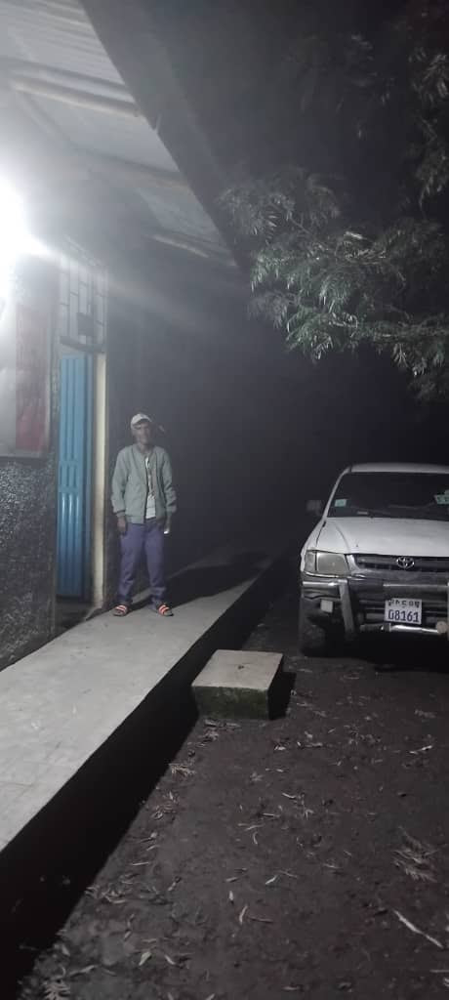</figure>
</figure>
</div></div>
</div></div>
</div></div>


<figure class="wp-block-gallery has-nested-images columns-default is-cropped wp-block-gallery-2 is-layout-flex wp-block-gallery-is-layout-flex">
<figure class="wp-block-image size-large">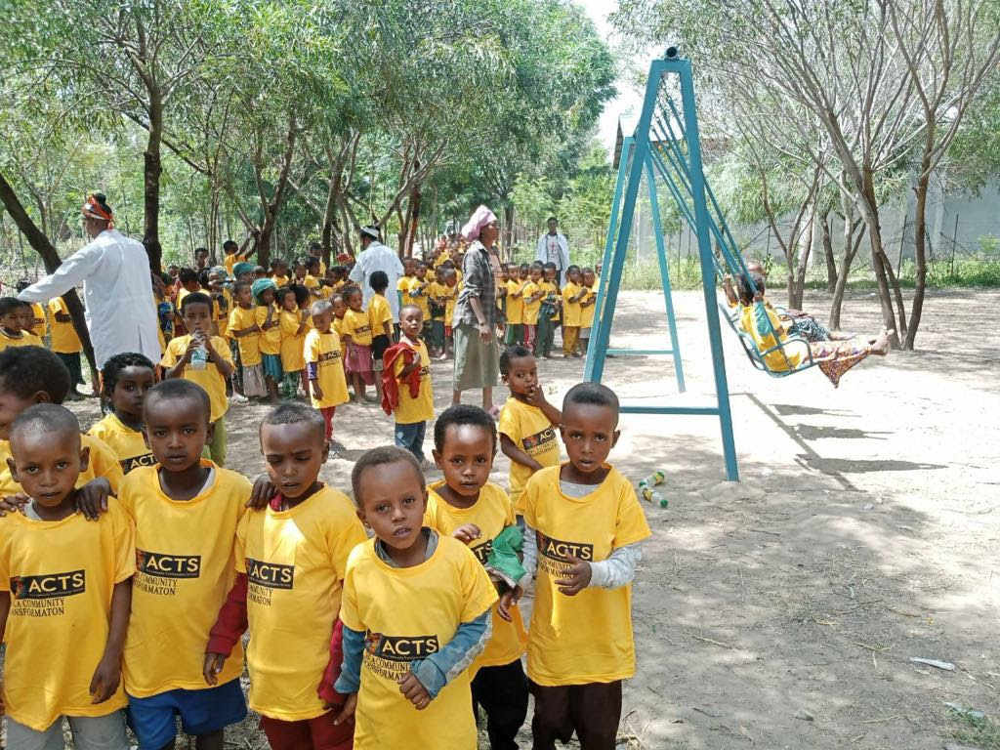</figure>
</figure>


<p class="has-text-align-left wp-block-paragraph">As the picture shows, some playground equipment has been added to the delight of the youngsters. Also, the children all received new “summer” ACTS t-shirts to wear during the upcoming off school season.</p>


<p class="wp-block-paragraph">The civil war that has recently come to a partial cease fire cost the lives of some 340,000 civilians and 550,000 soldiers. Millions of people were displaced, and the agricultural production was severely interrupted. This has led to famine throughout much of Ethiopia. While ACTS has been able to secure the supplies needed to maintain the daily hot meal program, costs have risen sharply. Many of the rebels who were involved in the war have now taken to kidnapping as a way to make a living. Because of this ACTS has been forced to move our modest office from Woudy’s (who as you may remember is our partner and in country director) hometown of Adama into the capital, Addis Ababa. This allows him to take an alternate route to Woja somewhat minimizing his exposure to this danger. While this, too, has affected the budget, we celebrate that God has continued to have his hand of protection on Woudy and that the Kingdom continues to grow.</p>


<p class="wp-block-paragraph">When the Cornells were in Ethiopia during their last visit, we met with a couple of men who very much want ACTS to become involved in their communities. Our goal is now to raise the funds necessary (an estimate of $100,000) to replicate the Woja success in another unreached (less than 2% believers) community. This has become slightly more complicated in that the Ethiopian government has created a new central Ethiopian regional agency. While we used to report to the Southern States region, we now must report to the new agency. Our contacts and positive relationships which have been fostered over the years have been lost and we must start over again with this group. A whole new five-year plan must be submitted outlining what, how, and why ACTS does what it does. The submission of the written plan will then be followed up by meetings and discussions. Please pray for a smooth transition to the new overseers of the Lord’s work in this region.</p>


<p class="wp-block-paragraph">We cannot express enough how thankful that we are that you have chosen to continue to partner with ACTS in fulfilling God’s Great Commission. We are blessed to have a man like Woudy leading the ACTS efforts and teaching and mentoring other church leaders throughout the country. Please keep his safety and the wellbeing of the Woja kids in your prayers. And pray for peace in Ethiopia.</p>


<p class="wp-block-paragraph">May God shine his light upon each and every one of you.</p>


<p class="wp-block-paragraph">August 2024</p>
]]></content:encoded>
					
					<wfw:commentRss>https://actskids.org/2024/08/01/i-saw-that-wisdom-is-better-than-folly-just-as-light-is-better-than-darkness-ecclesiastes-213/feed/</wfw:commentRss>
			<slash:comments>0</slash:comments>
		
		
		<post-id xmlns="com-wordpress:feed-additions:1">359</post-id>	</item>
		<item>
		<title>Worship in Woja</title>
		<link>https://actskids.org/2021/09/25/worship-in-woja/</link>
					<comments>https://actskids.org/2021/09/25/worship-in-woja/#respond</comments>
		
		<dc:creator><![CDATA[Karen Cornell]]></dc:creator>
		<pubDate>Sat, 25 Sep 2021 22:44:42 +0000</pubDate>
				<category><![CDATA[Uncategorized]]></category>
		<guid isPermaLink="false">https://actskids.org/?p=315</guid>

					<description><![CDATA[]]></description>
										<content:encoded><![CDATA[
<div class="wp-block-media-text alignwide"><figure class="wp-block-media-text__media"><video controls src="../wp-content/uploads/2021/09/A03D345A-2E80-457F-8B2A-BCEA32CAE133.mov"></video></figure><div class="wp-block-media-text__content">
<p class="has-large-font-size wp-block-paragraph"></p>
</div></div>
]]></content:encoded>
					
					<wfw:commentRss>https://actskids.org/2021/09/25/worship-in-woja/feed/</wfw:commentRss>
			<slash:comments>0</slash:comments>
		
		<enclosure url="../wp-content/uploads/2021/09/A03D345A-2E80-457F-8B2A-BCEA32CAE133.mov" length="25732970" type="video/quicktime" />

		<post-id xmlns="com-wordpress:feed-additions:1">315</post-id>	</item>
		<item>
		<title>Violence erupts in Woja</title>
		<link>https://actskids.org/2020/03/08/violence-erupts-in-woja/</link>
					<comments>https://actskids.org/2020/03/08/violence-erupts-in-woja/#respond</comments>
		
		<dc:creator><![CDATA[Karen Cornell]]></dc:creator>
		<pubDate>Sun, 08 Mar 2020 16:28:05 +0000</pubDate>
				<category><![CDATA[Uncategorized]]></category>
		<guid isPermaLink="false">https://actskids.org/?p=293</guid>

					<description><![CDATA[Update about the current situation in the Woja village of Ethiopia. Tesfaye (pastor and school administrator in Woja) called and informed ACTS that schools in the Woja area were closed on March 4 because of what happened the evening before. The same issue is recurring of Mesqan-Mareko tribal tension which erupted again as they are [&#8230;]]]></description>
										<content:encoded><![CDATA[
<p class="wp-block-paragraph">Update about the current situation in the Woja village of Ethiopia. Tesfaye (pastor and school administrator in Woja) called and informed ACTS that schools in the Woja area were closed on March 4 because of what happened the evening before. The same issue is recurring of Mesqan-Mareko tribal tension which erupted again as they are trying to finish chasing the remnants of the Mesqan related people from the Mareko. That night they burned houses and killed one lady from a household related to the Mesqan tribe. These houses are not far from ACTS school.  It was the neighbor&#8217;s house to Deneke&#8217;s (one of ACTS&#8217; guards at the school),  The village has used Deneke&#8217;s home in the past for worship. They were targeting Bedru who was the community leader who has helped ACTS many times with government relations in the past.  Bedru has stayed because his wife was Mareko.  Bedru tried to fight back all night as he was armed also. He survived but lost one of his family members in the fight. Several were wounded. The area is surrounded by Federal police and no one is allowed to get close. Hence, we do not have any pictures. Everyone is told to stay at home. Tesfaye was supposed to come to Adama for a church meeting and he could not. The situation just gets worse without any warning signs. It is traumatizing to our children, their families and the area as a whole. Let&#8217;s continue to pray specifically for the community and the little ones.</p>


<p class="wp-block-paragraph">The Cornells&#8217; current plans to travel to Ethiopia are canceled.  </p>


<p class="wp-block-paragraph">For more detailed information about the area and the unrest, see <a href="https://actskids.org/2020/01/01/a-brief-video-about-acts-work-in-ethiopia/">A Brief Video about ACTS&#8217; work in Ethiopia prepared by Pastor Woudy&#8217;s daughter</a>.</p>
]]></content:encoded>
					
					<wfw:commentRss>https://actskids.org/2020/03/08/violence-erupts-in-woja/feed/</wfw:commentRss>
			<slash:comments>0</slash:comments>
		
		
		<post-id xmlns="com-wordpress:feed-additions:1">293</post-id>	</item>
		<item>
		<title>A brief video about ACTS work in Ethiopia</title>
		<link>https://actskids.org/2020/01/01/a-brief-video-about-acts-work-in-ethiopia/</link>
					<comments>https://actskids.org/2020/01/01/a-brief-video-about-acts-work-in-ethiopia/#comments</comments>
		
		<dc:creator><![CDATA[Karen Cornell]]></dc:creator>
		<pubDate>Thu, 02 Jan 2020 03:56:51 +0000</pubDate>
				<category><![CDATA[Uncategorized]]></category>
		<guid isPermaLink="false">https://actskids.org/?p=287</guid>

					<description><![CDATA[A brief video about ACTS work in Ethiopia.]]></description>
										<content:encoded><![CDATA[
<figure class="wp-block-embed-youtube wp-block-embed is-type-video is-provider-youtube wp-embed-aspect-16-9 wp-has-aspect-ratio"><div class="wp-block-embed__wrapper">
<div class="video-container"><iframe loading="lazy" width="790" height="444" src="https://www.youtube.com/embed/gjfAlNW70r8?feature=oembed" frameborder="0" allow="accelerometer; autoplay; encrypted-media; gyroscope; picture-in-picture" allowfullscreen></iframe></div>
</div></figure>


<p class="wp-block-paragraph"> A brief video about ACTS work in Ethiopia.</p>
]]></content:encoded>
					
					<wfw:commentRss>https://actskids.org/2020/01/01/a-brief-video-about-acts-work-in-ethiopia/feed/</wfw:commentRss>
			<slash:comments>1</slash:comments>
		
		
		<post-id xmlns="com-wordpress:feed-additions:1">287</post-id>	</item>
		<item>
		<title>Merry Christmas from ACTS</title>
		<link>https://actskids.org/2019/12/23/merry-christmas-from-acts/</link>
					<comments>https://actskids.org/2019/12/23/merry-christmas-from-acts/#respond</comments>
		
		<dc:creator><![CDATA[Karen Cornell]]></dc:creator>
		<pubDate>Mon, 23 Dec 2019 20:06:45 +0000</pubDate>
				<category><![CDATA[Uncategorized]]></category>
		<guid isPermaLink="false">https://actskids.org/?p=284</guid>

					<description><![CDATA[I always thank my God as I remember you in my prayers, because I hear about your love for all his holy people and your faith in the Lord Jesus. I pray that your partnership with us in the faith may be effective in deepening your understanding of every good thing we share for the [&#8230;]]]></description>
										<content:encoded><![CDATA[
<p class="wp-block-paragraph"><em>I always thank my God as I remember you in my prayers,  because I hear about your love for all his holy people and your faith in the Lord Jesus.  I pray that your partnership with us in the faith may be effective in deepening your understanding of every good thing we share for the sake of Christ.  Your love has given me great joy and encouragement, because you, brother, have refreshed the hearts of the Lord’s people.</em> <strong>Philemon1:4-7</strong></p>


<p class="wp-block-paragraph">Thank you from ACTS for your dedicated prayers and support during 2019.  While it has been a challenging year for ACTS Ministry in Ethiopia due to the unrest in the villages, we all look forward with anticipation as to how the Lord will use these difficulties for His glory and in the advancement of His Kingdom!</p>


<p class="wp-block-paragraph">We will continue until all have heard about Jesus whose birth we celebrate this week.  It is because of your support that ACTS is able to continue this work.  We humbly request that you consider a year end contribution to further these Great Commission efforts.</p>


<p class="wp-block-paragraph">Merry Christmas to you and your family from all of us at ACTS Ministry here in the US and in Ethiopia.  May 2020 be a year of renewal and restoration bringing peace to our beloved.</p>


<p class="wp-block-paragraph">Many Blessings,<br>Bill and Karen Cornell</p>
]]></content:encoded>
					
					<wfw:commentRss>https://actskids.org/2019/12/23/merry-christmas-from-acts/feed/</wfw:commentRss>
			<slash:comments>0</slash:comments>
		
		
		<post-id xmlns="com-wordpress:feed-additions:1">284</post-id>	</item>
		<item>
		<title>Summer 2019 Newsletter</title>
		<link>https://actskids.org/2019/09/30/summer-2019-newsletter/</link>
					<comments>https://actskids.org/2019/09/30/summer-2019-newsletter/#respond</comments>
		
		<dc:creator><![CDATA[Karen Cornell]]></dc:creator>
		<pubDate>Tue, 01 Oct 2019 01:35:32 +0000</pubDate>
				<category><![CDATA[Uncategorized]]></category>
		<guid isPermaLink="false">https://actskids.org/?p=271</guid>

					<description><![CDATA[ACTS’ work in Ethiopia continues to flourish and God’s Kingdom in the areas where ACTS is present continues to grow. Your prayers, support and financial gifts are a blessing to those living in what has become a very troubled country. Over the past several months, we have reported on two significant issues that have hindered [&#8230;]]]></description>
										<content:encoded><![CDATA[<p>ACTS’ work in Ethiopia continues to flourish and God’s Kingdom in the areas where ACTS is present continues to grow. Your prayers, support and financial gifts are a blessing to those living in what has become a very troubled country.</p>
<p>Over the past several months, we have reported on two significant issues that have hindered peace and prosperity for those whom ACTS serves. Thankfully, the summer rains have come and alleviated the severe water shortage in the Hadha village and surrounding countryside. Crops and livestock were lost to the drought and the people in the area had to make do with the limited amount of water they could store from the every other week water delivery provided by the government. Imagine, if you will, surviving on what two 6 gallon jugs of water could hold for two weeks. It is hard enough for us to imagine our normal source of water to be from an open air pond filled by the summer rains with no protection from animals and other containments. A picture of the Hadha pond is included in this update. While ACTS would like to step in and provide clean drinking water from a well like the one drilled in Woja, studies show that it would have to be about 400 meters deep and would cost about $280,000.</p>
<p>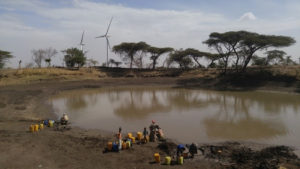</p>
<p>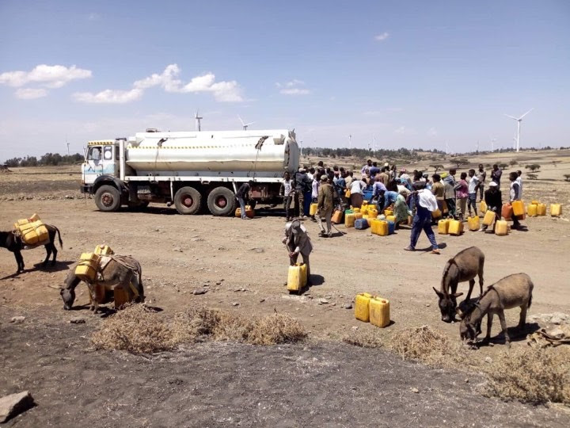</p>
<p>The other problematic issue that we have reported on is the ethnic conflict around the Woja school. The violence has subsided to a degree as those families who were living cross culturally have mostly relocated back to where their tribe is the majority. This, after living for decades as neighbors. ACTS was able to help families whose houses and belongings were destroyed with some basic provisions. Being careful not to “choose sides” ACTS provided supplies to families on both sides of the conflict. Some temporary housing arrangements were also procured to give the families shelter. After the violence subsided, the Woja school attendance rebounded with about 85-90% of the students making it to class on a daily basis.</p>
<p>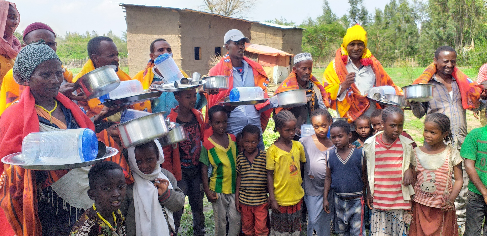</p>
<p><div id="attachment_278" style="width: 510px" class="wp-caption aligncenter">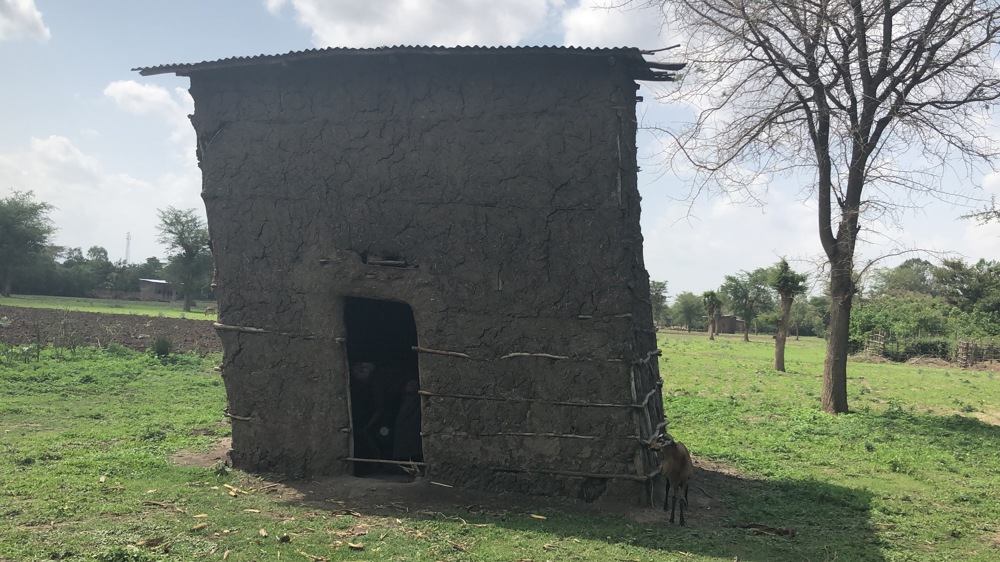<p id="caption-attachment-278" class="wp-caption-text">Temporary Housing for Displaced Families was constructed to give temporary shelter.</p></div></p>
<p>In June, the Woja school held its annual “graduation” ceremonies. On the one hand, it proves to be a joyous celebration, but on the other, parents realize that the meal that their children have been receiving daily will no longer be provided. And the full day of education that their kids have been receiving will be reduced to a half-day in the government school. But, the graduates enjoy the spotlight and attention that they receive. Below is a photo of the celebration including the games for the graduates.</p>
<p>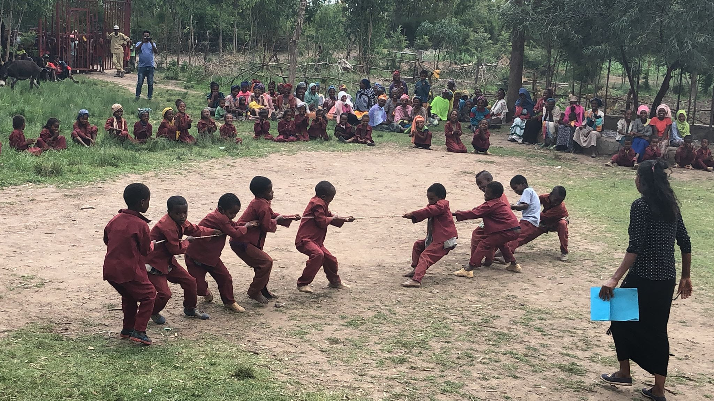<br />
One of the visions that ACTS had when building the Woja school was to make it a green oasis in the middle of the barren high desert. Trees were planted and they have matured nicely so that the feel of the school is much warmer and shade is.provided during the warm African days. Ethiopia as a country has suffered from deforestation as wood was a readily available fuel for cooking. A national effort is underway to “regreen” the country and the people of Woja participated in the effort by planting seedlings, encouraged by the beauty of the school.</p>
<p>In Hadha, 58 children attended classes at a makeshift school. 100 hundred more registered but could not be accommodated. ACTS is exploring how it might partner with another NGO called RISE to build a proper school for that area. Woudineh, ACTS director in Ethiopia, is also involved with that local NGO. He has gotten estimates of $107,000 to build the school. It being a very remote location contributes to the expense. Please pray that the necessary resources will be provided for this project. Under Woudineh’s direction, the Hadha locals joined the tree planting effort and planted 400 seedlings. Woudineh also planted 100 seedlings for coffee trees. If the crop becomes successful, it is hoped that the area around Hadha will become a coffee growing region thus providing jobs to the local inhabitants. ACTS is planning to support this effort by excavating a new pond which will provide water for the project, but more importantly, provide another source of water for the people of the area. Most importantly, however, is the fact that both Woudineh and the Christian teachers report that these projects, always done in conjunction with prayer and a spiritual message, have led to an increasing number of people, as Woudineh says, “opening up and asking about Jesus.” With all that is lacking, this is what they need most.</p>
<p>With all of the turmoil and unpleasant discourse that disrupt our daily lives, it is sometimes easy to forget those who suffer so much more than we. Ethiopia is annually on the list of countries where Christians are the most persecuted. The country is experiencing continued ethnic strife even as its leaders labor towards establishing a true democracy aimed at including representation from all of the nine ethnic regions. Poverty in areas of the country is absolute. Please pray for Ethiopia. Please pray for the safety and well-being of the children ACTS serves and that the growing Christian community would act as peacemakers and in so doing, bring glory to the name of Jesus, our savior.</p>
]]></content:encoded>
					
					<wfw:commentRss>https://actskids.org/2019/09/30/summer-2019-newsletter/feed/</wfw:commentRss>
			<slash:comments>0</slash:comments>
		
		
		<post-id xmlns="com-wordpress:feed-additions:1">271</post-id>	</item>
		<item>
		<title>Families In Woja Displaced By Tribal Unrest</title>
		<link>https://actskids.org/2019/03/04/families-in-woja-displaced-by-tribal-unrest/</link>
					<comments>https://actskids.org/2019/03/04/families-in-woja-displaced-by-tribal-unrest/#respond</comments>
		
		<dc:creator><![CDATA[Karen Cornell]]></dc:creator>
		<pubDate>Tue, 05 Mar 2019 02:48:49 +0000</pubDate>
				<category><![CDATA[Uncategorized]]></category>
		<guid isPermaLink="false">https://actskids.org/?p=266</guid>

					<description><![CDATA[Eight households who have either their children or grandchildren attending ACTS school had their houses burned. Here&#8217;s what&#8217;s happening. There is open conflict not only at night but during the daylight hours. Parents and children are terrified due to the shooting. ACTS WOJA School has 205 active attendees, 154 from the Mareko tribe and 51 from the Meskan tribe. PLEASE PRAY FOR [&#8230;]]]></description>
										<content:encoded><![CDATA[<p>Eight households who have either their children or grandchildren attending ACTS school had their houses burned.</p>
<p>Here&#8217;s what&#8217;s happening.</p>
<ul>
<li>There is open conflict not only at night but during the daylight hours.</li>
<li>Parents and children are terrified due to the shooting.</li>
<li>ACTS WOJA School has 205 active attendees, 154 from the Mareko tribe and 51 from the Meskan tribe.</li>
</ul>
<p>PLEASE PRAY FOR THE SAFETY OF THE FAMILIES AND CHILDREN AND THAT THE UNREST WILL COME QUICKLY TO A PEACEFUL RESOLUTION.</p>
<p>ACTS is trying to raise resources to aid the displaced families starting with those in the WOJA community.</p>
<p>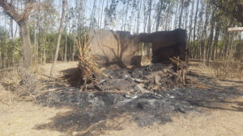 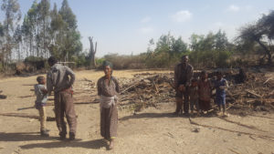 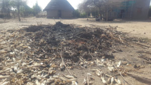</p>
<p>Families have lost their homes due to the fighting between two tribes, the Mareko and the Meskan. The conflict is primarily due to some villages which are predominately Mareko in population being run by members of the Meskan tribe and job opportunities are not being shared with the Mareko.  The displaced families have now had to leave and move to another town, Inseno.  They were hidden and moved in the dark of night as their lives had been threatened.  The total of the displaced is 3138. Out of these 217 had their houses burned, 22 died, 50 had personal property stolen, and 65 were severely injured.</p>
]]></content:encoded>
					
					<wfw:commentRss>https://actskids.org/2019/03/04/families-in-woja-displaced-by-tribal-unrest/feed/</wfw:commentRss>
			<slash:comments>0</slash:comments>
		
		
		<post-id xmlns="com-wordpress:feed-additions:1">266</post-id>	</item>
		<item>
		<title>February 2019 Newsletter</title>
		<link>https://actskids.org/2019/03/04/february-2019-newsletter/</link>
					<comments>https://actskids.org/2019/03/04/february-2019-newsletter/#respond</comments>
		
		<dc:creator><![CDATA[Karen Cornell]]></dc:creator>
		<pubDate>Tue, 05 Mar 2019 02:40:24 +0000</pubDate>
				<category><![CDATA[Uncategorized]]></category>
		<guid isPermaLink="false">https://actskids.org/?p=256</guid>

					<description><![CDATA[God’s blessings continue to pour forth as well as do challenges and opportunities for ACTS Ministry. If you have read any of the newsletters over the last several months, you are aware that the country of Ethiopia has faced severe turmoil. The uprising and violence of two years ago lead to the appointment of a [&#8230;]]]></description>
										<content:encoded><![CDATA[<p>God’s blessings continue to pour forth as well as do challenges and opportunities for ACTS Ministry.</p>
<p>If you have read any of the newsletters over the last several months, you are aware that the country of Ethiopia has faced severe turmoil. The uprising and violence of two years ago lead to the appointment of a new prime minister. Much optimism accompanied the inauguration of this new Christian leader and after a brief time of unrest, the country settled into a period of embracing his plans to release political prisoners and to restore the culture of a true democracy. The country’s first female president was installed and about half of the legislative body are now women. Unfortunately, members of the deposed ruling tribe began a quest to undermine the new government by fomenting unrest between tribes throughout the country which had coexisted side-by-side in peace for decades.</p>
<p>This recent history affected ACTS in a number of ways. First, every time that a trip by the Cornells along with others was planned, new outbreaks of violence occurred and the plans had to be cancelled. Second, and more seriously, the warring between tribes included the areas around the largest school, the Woja School. Safety concerns resulted in the closing of the school for a couple of weeks last fall and some of the children’s parents suffered property losses. Three teachers were forced to flee their dwellings as they belonged to a tribe different from the one that controlled their village. On the positive side, however, the employees and other associates of ACTS are delighted in the leader God has chosen as the new prime minister. His plans and direction for the country fill them with hope.</p>
<p>Through all of this turmoil, the work of ACTS with the children in the schools and with projects to benefit the whole community continue. The Woja well which provides accessible clean water for the surrounding area continues to be a blessing for many. It is difficult, if not impossible, to measure the impact on health and sickness issues that the clean water has made, but it is easy to see the school yard gardens which are providing fresh produce for the lunch program.</p>
<p>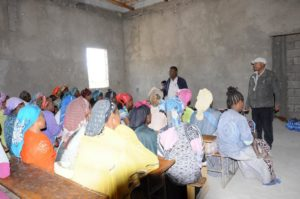The building project continues to move along. While the two guest rooms are not yet complete, the gathering room has already been put to use. A parents’ meeting was held in it prior to the annual children’s educational field trip to a nearby lake. Another meeting was held in the building to introduce the idea of adult education with classes commencing shortly. We remember when the well was first completed and we were asked if it was only for use by the small Christian community. We responded that all were welcome and have made it clear that the same is true for the adult education program. Beyond simply helping individuals to improve themselves, ACTS knows that the more direct interaction that we have with the people in the community, the greater the chance to share the Gospel. We want to increase the opportunities for parents to ask more about who this Jesus is that their kids come home singing about.</p>
<p>Mentioned above is the field trip taken by the kids. This kind of an outing exposes the kids to things (as simple as a lake) that they have not seen before. It is an annual day trip that is much anticipated. Pictures of the outing are included in this update.</p>
<p>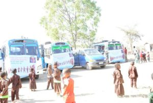</p>
<p>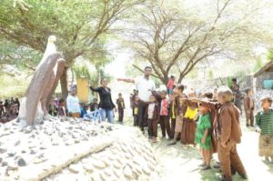</p>
<p>Across from the Woja School, the foundation has been laid for a church building to house the new church that ACTS was instrumental in planting. ACTS government NGO is for community development work and not religious activities. ACTS cannot be directly involved with the direct financing or construction of the church. Instead, ACTS helps in other ways. For example, the onsite Woja School administrator happens to also be a church planter. The income he receives for his job with ACTS helps sustain his family while he engages in church planting and preaching activities. This has directly led to the growth of God’s Kingdom.</p>
<p>The newest ACTS school, a simple mud hut, is in its second year of operation. ACTS has just received a proposal for $105,000, for the construction of a permanent four room school building. This will allow expansion beyond the thirty children who currently attend. Over the past year, ACTS has been part of a team that constructed a road to the sight of this school allowing a broader reach to the community with educational offerings so expansion is necessary.</p>
<p>Back in Fresno, California, the Cornells home church, Trinity Community Church of Clovis, is featuring ACTS as its focus Mission Organization in February. Not only does this serve to increase ACTS awareness among this church family, but increases the volume of prayers coming its way.</p>
<p>In an exciting turn of events, it appears that Woudineh (Woudy), ACTS in-country director, will be able to obtain a visa to make a visit later this year. Traveling with his wife who works for World Bank will facilitate this happening and it appears that August will be the best timing for them. When he comes, ACTS will have an event to facilitate you all meeting with and hearing from him. We believe that you will be delighted to hear from this man of God who is so vital to ACTS’ mission.</p>
<p>To those of you who continue to support ACTS through prayer and finances, we say thank you, thank you, thank you.</p>
<p>For those who have previously supported ACTS and are not current donors, we simply thank you for your past support and encourage you to become engaged with ACTS work again. Remember, all financial support goes directly to the work on the ground in Ethiopia. All time and travel costs expended by those involved in the US serving God in this ministry are given on a voluntary basis. There are no salaries or administrative overhead meaning that your dollars truly go towards efforts to introduce the name of Jesus to the unreached.</p>
]]></content:encoded>
					
					<wfw:commentRss>https://actskids.org/2019/03/04/february-2019-newsletter/feed/</wfw:commentRss>
			<slash:comments>0</slash:comments>
		
		
		<post-id xmlns="com-wordpress:feed-additions:1">256</post-id>	</item>
		<item>
		<title>ACTS Urgent Prayer Request</title>
		<link>https://actskids.org/2018/12/04/247/</link>
					<comments>https://actskids.org/2018/12/04/247/#respond</comments>
		
		<dc:creator><![CDATA[Karen Cornell]]></dc:creator>
		<pubDate>Tue, 04 Dec 2018 21:45:24 +0000</pubDate>
				<category><![CDATA[Uncategorized]]></category>
		<guid isPermaLink="false">https://actskids.org/?p=247</guid>

					<description><![CDATA[In our latest ACTS newsletter, the Cornells reported that their planned trip to Ethiopia had been put on hold because of tribal violence that had reached the area of the Woja school. ACTS’ in country director, Woudy, reported that he had snuck into the Woja village after nightfall to see how things were going. He [&#8230;]]]></description>
										<content:encoded><![CDATA[<p>In our latest ACTS newsletter, the Cornells reported that their planned trip to Ethiopia had been put on hold because of tribal violence that had reached the area of the Woja school. ACTS’ in country director, Woudy, reported that he had snuck into the Woja village after nightfall to see how things were going. He reported back that school was in session with the largest enrollment ever. He also sent pictures, some of which we are sharing here. Beyond the smiling faces of the children, one thing that we noted that brings a smile to our faces is the presence of maturing trees. One of ACTS goals was to transform the barren school yard into an inviting environment for the children. Shade trees are part of this transformation.</p>
<p>Unfortunately, this evening, we received some very troubling news. Over the weekend, 19 deaths and 42 critical woundings have been reported as the result of fighting between the Meskan tribe around Butajira (where we have stayed before) along with Inseno (the people from the book Bill authored), and the Mareko tribe which includes our friends from Woja and Koshe.</p>
<p><a href="../wp-content/uploads/2018/12/unnamed.jpg">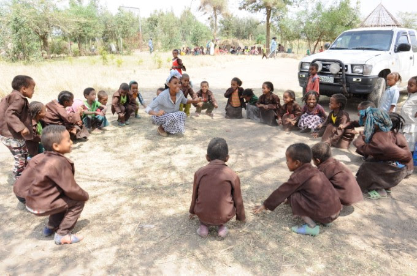</a></p>
<p>We have no other details at this time, but please join us in praying that:</p>
<ol>
<li>The school children and our employees remain safe and that the infrastructure and supplies remain untouched.</li>
<li>The conflict which has been dormant for many years, be resolved without any further bloodshed.</li>
<li>God would use His small Christian community to demonstrate peace and love to help diffuse the strife.</li>
<li>That the country would embrace the goal of the new government to establish a true democracy where all tribes would come together as one nation.</li>
</ol>
<p>As we get additional news, we will try to keep you posted.</p>
<p><div id="attachment_249" style="width: 810px" class="wp-caption alignleft"><a href="../wp-content/uploads/2018/12/unnamed-1.jpg">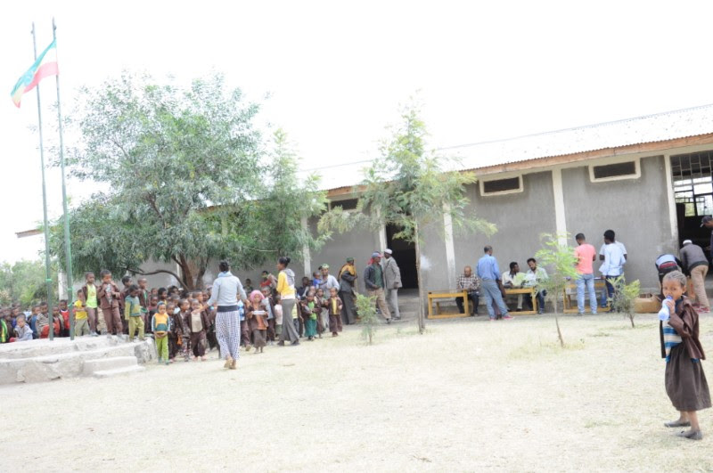</a><p id="caption-attachment-249" class="wp-caption-text"><em>Early in the morning, the children gather as school begins. They are in school each day and being fed a hot meal. The parents are grateful that some sense of normalcy occurs for them during school time.</em></p></div></p>
]]></content:encoded>
					
					<wfw:commentRss>https://actskids.org/2018/12/04/247/feed/</wfw:commentRss>
			<slash:comments>0</slash:comments>
		
		
		<post-id xmlns="com-wordpress:feed-additions:1">247</post-id>	</item>
	</channel>
</rss>
